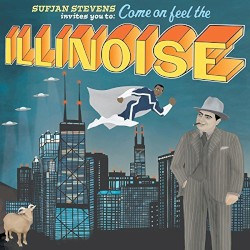
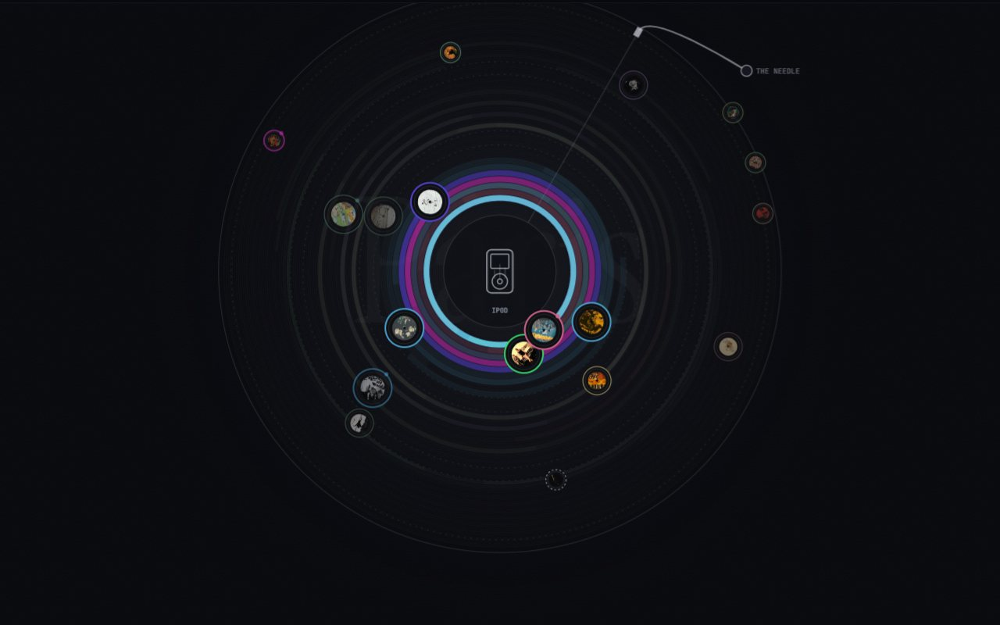
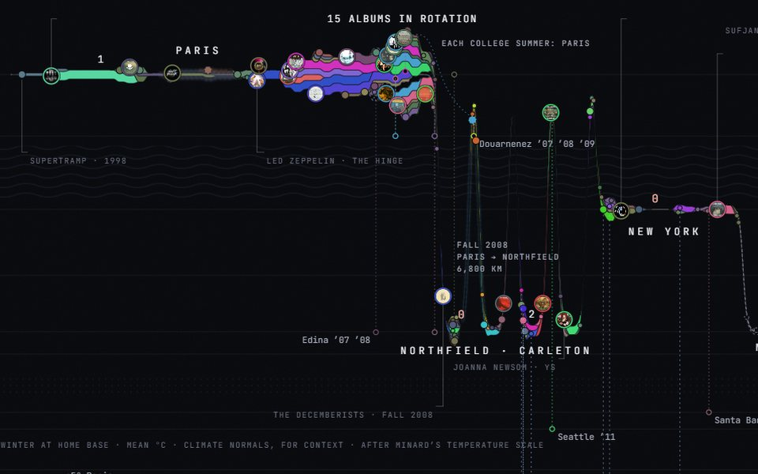
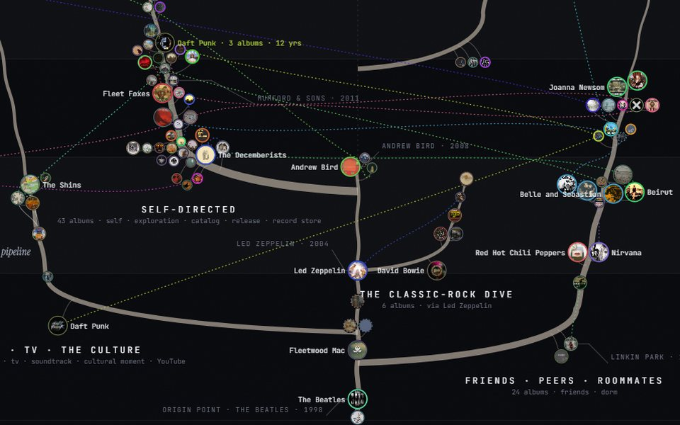

On repeat

I grew up in Paris and live in Atlanta. In between came Northfield, New York, Minneapolis and Fargo.
125 albums from 1998 to 2025, each placed where I was living when it was on repeat.

Every album in rotation, orbiting whatever it played on. Each lap under the needle plays its note.

Twenty-seven years drawn as one migration, after Minard.

Where the music came from: one stereo, then everyone else.
I published five essays on LinkedIn in February and March 2026. Four are about Pearl, an AI assistant I built and run on a Mac Mini at home. One is about Microsoft. The story at the top is different. An AI wrote it, not me.